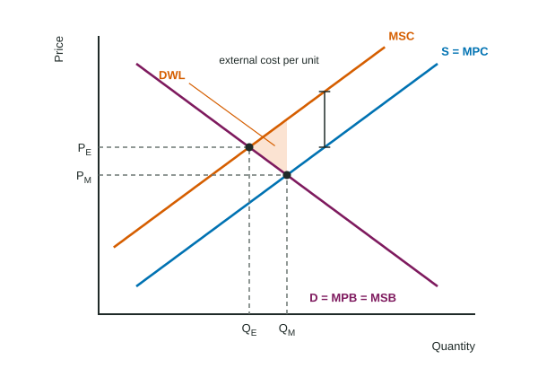
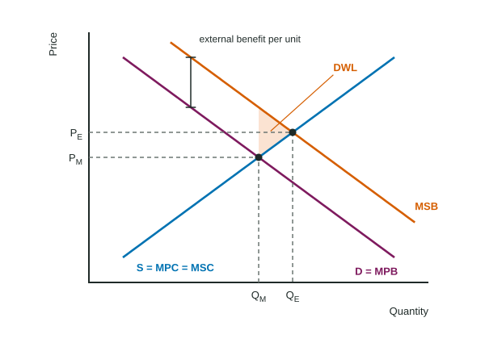

A paper mill upriver makes paper that people pay for. It also releases fumes, and the families downstream run air filters all summer. The mill pays for wood, workers and power, but nobody bills it for the filters. Because that cost never reaches the mill's books, the market makes more paper, and more fumes, than is best for everyone.
Costs and benefits outside the deal
An externality is a cost or benefit of making or using a good that falls on people outside the market: third parties who neither pay nor get paid. Buyers look at their own benefit, the marginal private benefit (MPB), which is the demand curve. Sellers look at their own cost, the marginal private cost (MPC), which is the supply curve. The market settles where MPB = MPC. Society's best quantity is where MSB = MSC (Topic 6.1). An externality pulls these two apart.
- MSC = MPC + the external cost per unit.
- MSB = MPB + the external benefit per unit.
The four kinds
| Kind | Example | Social vs private curve | Market quantity vs efficient |
|---|---|---|---|
| Negative production | a mill's fumes | MSC above MPC (S) | too much |
| Positive production | a beekeeper's bees pollinate orchards | MSC below MPC (S) | too little |
| Positive consumption | a flu shot protects others | MSB above MPB (D) | too little |
| Negative consumption | loud fireworks at night | MSB below MPB (D) | too much |
Two questions sort any case. Does it help or harm others (positive or negative)? Does it come from making the good or from using it (production or consumption)? A production externality moves the cost side; a consumption externality moves the benefit side. Mixing these up is a common reader-report slip.
Drawing a negative production externality

Label Price and Quantity on the axes. Draw D (label it D = MPB = MSB, since no benefit spills over), S = MPC, and MSC above S by the external cost per unit. Mark both points: the market quantity QM where D meets S, and the efficient quantity QE where D meets MSC. State which is larger: here the market makes too much, at too low a price. The deadweight loss is the triangle between MSC and D from QE to QM: units whose cost to society is above their worth. It points toward QE. Only 11% of students earned the point for comparing these two quantities on a recent exam, so always name both.
Worked example: the paper mill in numbers. In an invented paper market, at 30, 40, 50 and 60 tons a day, MPB is $14, $12, $10 and $8, MPC is $6, $8, $10 and $12, and fumes cost residents $4 per ton, so MSC is $10, $12, $14 and $16.
- Market quantity: MPB = MPC = $10 at 50 tons.
- Efficient quantity: MSB = MSC = $12 at 40 tons. The market makes 10 tons too many.
- Deadweight loss: at 50 tons MSC is $14 and MSB $10, a $4 gap shrinking to zero at 40 tons: dollars a day.
- Corrective tax: the external cost per unit at the efficient quantity, dollars per ton. Revenue: dollars a day, using the quantity after the tax.
Positive externalities: too little

When people who get a flu shot also protect their neighbors, MSB lies above demand. Buyers stop at QM, where their own benefit meets the cost, though units out to QE are worth more to society than they cost. Now the deadweight loss triangle lies to the right of the market quantity, and again it points toward the efficient quantity.
Fixing it: corrective taxes and subsidies
The fix is to make buyers or sellers face the effect they ignore, unit by unit.
- A corrective (Pigouvian) tax per unit equal to the external cost at the efficient quantity raises the firms' marginal cost: supply shifts up onto MSC, and the market produces QE at a higher price.
- A corrective subsidy per unit equal to the external benefit does the same for positive externalities. Match it to the cause: for a consumption externality, paying buyers shifts demand up onto MSB; for a production externality, paying producers shifts supply down onto MSC.
A lump-sum tax (a fixed fee, whatever the output) does not correct an externality. It raises total and average cost but not marginal cost, so the firm's price and quantity, and the pollution, stay where they were. Readers see answers that claim a fixed fee "shifts supply"; it does not.
Other tools exist, such as limits on emissions or rules on where a plant may operate. On the exam, the per-unit tax or subsidy is the one you will be asked to draw and to size.